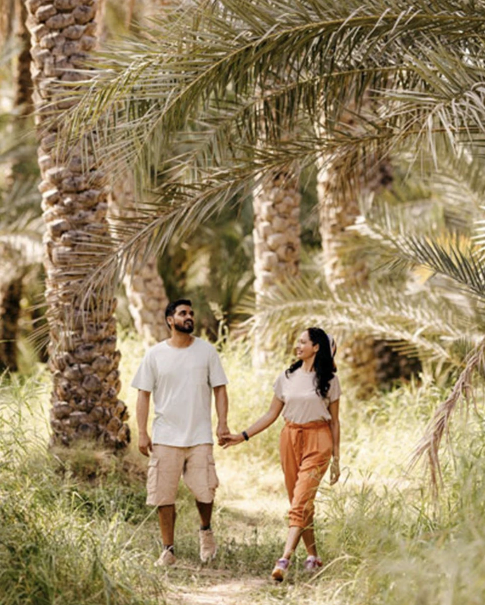
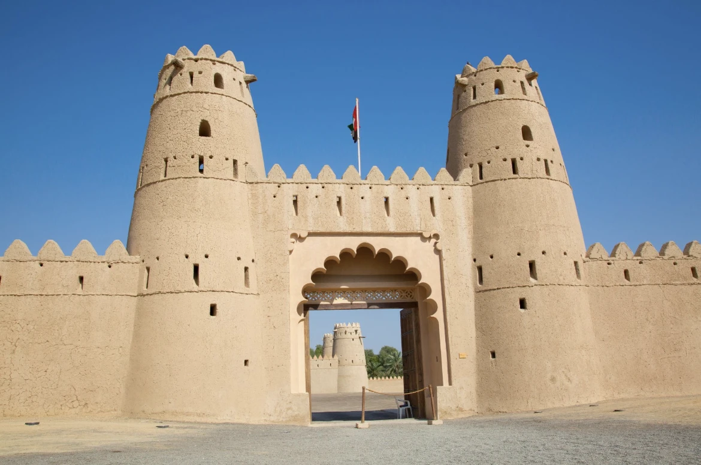
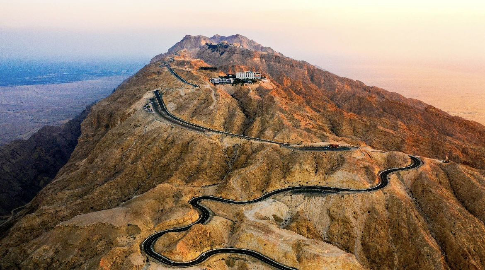

Beyond Abu Dhabi’s modern skyline, Al Ain offers a different side of the Emirates. Known as the Garden City, this historic destination brings together shaded oasis paths, traditional architecture and dramatic mountain scenery. It is an excellent choice for a weekend escape, whether you are travelling with family, friends or simply looking for a change of pace.
This road-trip guide brings together three memorable stops: the UNESCO-listed Al Ain Oasis, the historic Al Jahili Fort and the winding mountain road to Jebel Hafeet.
1. Al Ain Oasis: Step into a living heritage landscape

Al Ain Oasis — a peaceful landscape of date palms and traditional irrigation channels.
Start your visit at Al Ain Oasis, part of the UNESCO World Heritage property known as the Cultural Sites of Al Ain. Walking beneath the palm trees feels a world away from the busy city. Shaded pathways lead through traditional agricultural plots, offering a glimpse of how generations of residents cultivated this landscape in an arid environment.
One of the oasis’s most interesting features is the falaj irrigation system. These traditional water channels distribute water to farms and demonstrate the ingenuity required to make agriculture possible in the desert.
Take your time exploring the paths, learning about the oasis environment and photographing the rows of palms. An early morning visit is especially pleasant, when the air is cooler and the light is soft.
2. Al Jahili Fort: Discover Al Ain’s history

Al Jahili Fort — one of Al Ain’s best-known historic landmarks.
Continue to Al Jahili Fort, a landmark that offers a window into the region’s past. Built in the late nineteenth century, the fort is known for its traditional form, substantial walls, towers and peaceful courtyard.
Today, the restored fort is a cultural destination where visitors can explore exhibitions and learn more about the history of Al Ain and the wider region. Displays associated with explorer Wilfred Thesiger provide a fascinating record of journeys through the Empty Quarter and life in the Arabian Peninsula.
Allow time to appreciate the architecture as well as the exhibitions. The fort is also a rewarding stop for photography, particularly when the warm light brings out the colour and texture of its walls.
3. Jebel Hafeet: A memorable sunrise mountain drive

The winding road up Jebel Hafeet offers expansive views over Al Ain and the surrounding landscape.
For a change of scenery, make your way to Jebel Hafeet, the striking mountain that rises above Al Ain. Its winding road is one of the UAE’s best-known scenic drives, climbing through rugged mountain terrain towards viewpoints overlooking the city and desert surroundings.
A sunrise visit can be especially rewarding. Set off early, allow plenty of time for the drive and enjoy the changing colours across the landscape as daylight arrives. Conditions can vary, so check the weather and road guidance before setting out, and use designated stopping areas rather than stopping on the road.
If you have extra time, consider adding Jebel Hafeet Desert Park to your itinerary to explore the area's natural and archaeological heritage.
A relaxed two-day Al Ain weekend itinerary
Day 1 — Oasis, history and a peaceful evening
Morning: Explore Al Ain Oasis and its shaded paths and traditional irrigation features.
Late morning: Visit Al Jahili Fort and discover its architecture and cultural exhibitions.
Afternoon: Take a lunch break and enjoy some free time in the city.
Evening: Head towards the Jebel Hafeet area and enjoy the surrounding scenery. Green Mubazzarah is a popular stop at the mountain’s base.
Day 2 — Sunrise at Jebel Hafeet
Early morning: Drive up Jebel Hafeet in time to enjoy the sunrise and panoramic views.
Morning: Explore the surrounding area or visit Jebel Hafeet Desert Park if time allows.
Afternoon: Enjoy a relaxed return journey, with time for refreshments and photo stops where permitted.
Make the journey part of the experience
Al Ain’s attractions are spread across the city and its surrounding landscape, so planning your route can make the weekend more enjoyable. Check attraction opening times before travelling, carry water, wear comfortable walking shoes and allow extra time for the mountain drive.
For visitors starting in Abu Dhabi, arranging transport in advance can make the trip simpler, particularly when travelling as a family or visiting several places in one day.
Explore Al Ain with Private Hire Limousine
Enjoy the road trip while a professional driver takes care of the journey. Private Hire Limousine can help you enquire about private chauffeur transportation from Abu Dhabi to Al Ain, hotel pickups and personalised sightseeing journeys.
Tell us your preferred travel date, pickup location and itinerary so we can discuss the arrangements for your trip.
Enquire on WhatsApp Request a quoteDiscover another side of the UAE
Al Ain is a destination where heritage and adventure sit side by side. Wander through the palm groves of Al Ain Oasis, explore the historic walls of Al Jahili Fort and watch the morning light spread across the landscape from Jebel Hafeet. With a little planning, these experiences come together in a weekend worth remembering.
Private Hire Limousine — your journey, your comfort, your experience.
Visitor information, access arrangements and opening hours may change. Check official destination sources before your visit. Sunrise times vary throughout the year; plan your departure accordingly.